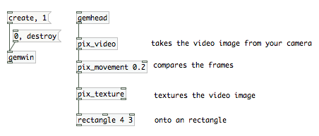
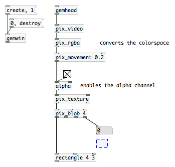

Video Tracking
A precondition of a good working simple motion detection is that you can disable the autofocus on your camera and that you have a good control over the lightning situation (so no sun/cloud change or large shadows).
The first step to determine the position of a moving item in the field of view of your camera is to compare frames to each other. In a stream of video you can either compare the previous to the current frame or a previously selected frame to the current one. The fist method will give us the movement, but we will lose the coordinates when the movement is very small or stops.
[pix_movement]
Compare the previous frame to the current one. It takes a threshold value (0-1) as an argument and in the second inlet.

This will result in all pixel information blacked out exept the space where a difference is detected relative to the previous frame. We will get to the point how to measure that to trigger things when we compared it to
[pix_background]
It is the cousin of pix_movement with the difference that we can set the reference frame to which the current frame is compared. This is called background substraction.

Click on the reset message to pix background to set the current frame to the reference frame.
A drawback of pix_background compared to pix_movement is, that if lightning situations change, we will have to re-reset the frame to compare the current frames to.
[pix_blob]
either way, we need another object: [pix_blob]. The monochrome information we receive of Pix_movement/pix_background are called blobs. The [pix_blob] object will give us mre infomations about those blobs, which we need if a) we want to trigger things if something moves in the field of view of the camera (pix_movement) or b) something is in the field of view of the camera what wasn't there when we set the reference frame (pix_background).

With this patch, if you move in front of the camera, you will see the output of pix_blob's last outlet changing. Where I left the empty box you can continue to add something you want to have triggered. Possibly a [> 0.001] which is the threshold followed by a [change] and a [select 1] to generate a bang each time the movement goes higher than a defined value.
Getting the coordinates
OK, we built a motion detector, but what about the coordinates? Where is the actual movement happening in the image? [pix_blob] has two more outlets which are just that.
note: i was trying to translate those patches into a manual:
http://www.uni-weimar.de/medien/wiki/Bewegungsmelder
The Chapter needs to be extended to cover pattern recognition (TUIO), pix_opencv (face recognition), blobs and multiblobs, IR illumination, multitouch technology and Kinect depth information/skeleton data.